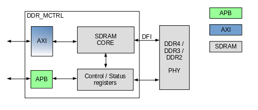
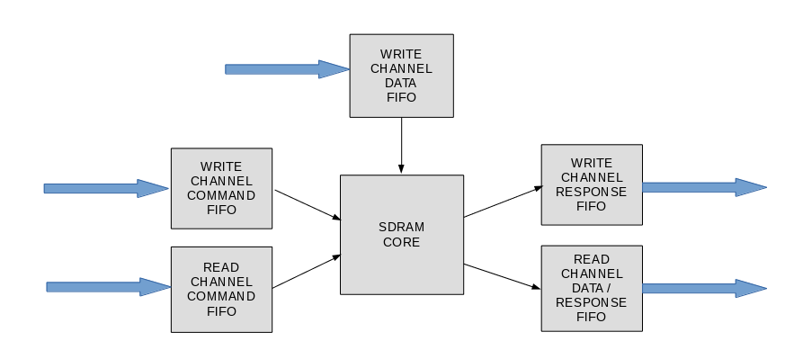

ehl_ddr является контроллером динамической памяти, совместимой со стандартами DDR [1, 8, 12]. Блок может быть параметризован под задачи пользователя для обеспечения оптимального использования ресурсов и достижения заданной тактовой частоты (раздел "Параметры"). Управление ehl_ddr осуществляется через интерфейс APB [13]. Обмен данными через интерфейс AXI4 [5]. Коммуникация с PHY через интерфейс DFI [2] и конфигурационные сигналы. Структурная схема ehl_ddr представлена ниже.
Хотя ehl_ddr совместим с DFI-совместимыми видами PHY, при интеграции могут возникнуть нестыковки. Верификация контроллера проводилась на ограниченном наборе доступных PHY ("перечень поддерживаемых PHY").
Все триггеры в схеме тактируются нарастающим фронтом соответствующих синхросигналов. Все тактовые домены синхронизированы между собой внутри ehl_ddr (раздел "Система доменов синхросигналов").
Далее представлено описание основных структурных модулей ehl_ddr.
Передача данных между процессором и контроллером памяти происходит через интерфейс AXI [5]. ehl_ddr является ведомым интерфейса AXI. Ширина шины данных определяется параметром AXI_WIDTH. Синхронизация данных между контроллером и шиной AXI происходит в FIFO каналов AXI.
Ограничение. Не поддерживаются сигналы LOCK, CACHE, PROT стандарта AXI3.
Ограничение. Не поддерживаются сигналы USER, QOS, REGION стандарта AXI4.
Ограничение. Контроллер не проводит проверку поля ID транзакций AXI для WRITE DATA CHANNEL. Таким образом, interleave AXI транзакции не поддерживаются.
Ограничение. Сигнал BURST допускает только значение INCR [5, раздел 4.4].
Шина AXI позволяет проводить транзакции с длиной до 256 трансферов и шириной отличной от ширины шины AXI (narrow transfer). Также поддерживается смещение начальных данных (unaligned transfer) относительно границы трансфера. Хотя использование длинных narrow transfer не эффективно с точки зрения пропускной способности AXI, оно допустимо (например, трансфер типа int для 64-битной шины).
Ограничение. Контроллер генерирует отклики двух типов OKAY и SLVERR [5, раздел 7.1] (SLVERR в случае обнаружения в данных неисправимой кодом Хэмминга ошибки).
Замечание. Если система не поддерживает сигналы AXI bresp/rresp, то их следует оставить неподключенными, а сигнализацию ошибок производить с помощью прерывания.
Интерфейс AXI имеет разделение на каналы, представленные далее:
| Название | Количество | Тип | Назначение |
|---|---|---|---|
| aclk | 1 | I | Синхросигнал AXI. |
| aresetn | 1 | I | Асинхронный сброс AXI. |
Контроллер принимает транзакцию по данному каналу, если в WRITE CHANNEL COMMAND FIFO имеется свободное место. Размер FIFO определяется параметром AXI_QUEUE_DEPTH. Транзакции обрабатываются последовательно в порядке поступления.
ehl_ddr инициирует исполнение записи в память, если в FIFO находятся записи и арбитраж на стороне операции записи. Запись в память инициируется после поступления во WRITE CHANNEL DATA FIFO данных, достаточных для проведения SDRAM Burst, или поступления всех данных (в случае, если их меньше, чем требуется для SDRAM Burst).
| Название | Количество | Тип | Назначение |
|---|---|---|---|
| awaddr | 39 | I | Адрес канала записи. |
| awlen | 8 | I | Длина транзакции записи. Не используется контроллером, транзакции разграничиваются с помощью wlast. |
| awsize | 3 | I | Ширина транзакции записи. Поддерживаемые значения зависят от параметра AXI_WIDTH. |
| awvalid | 1 | I | Запрос команды записи. |
| awid | AXI_ID_WIDTH | I | Идентификатор транзакции. |
| awready | 1 | O | Подтверждение команды записи. |
Контроллер принимает данные в WRITE CHANNEL DATA FIFO, если в нем имеется место и для данной транзакции имеется запись в WRITE CHANNEL COMMAND FIFO. На основании управляющих сигналов происходит упаковка данных в соответствии с их размером awsize. Как только данные с шириной AXI_WIDTH получены через AXI, они могут быть направлены на запись, если соответствующая им транзакция записи направлена на исполнение. Для awsize равной ширине шины запись происходит за 1 такт, для транзакций меньшей ширины (narrow transfer) запись занимает больше тактов в зависимости от размера и начального смещения (aligned transfer). Данные в данном канале должны поступать в соответствии с порядком адресов во Write Address Channel. Ядро контроллера принимает данные только после того, как получен соответствующий им адрес (с точки зрения мастера AXI контроллер может принимать данные до адреса из-за наличия регистровых срезов в каналах AXI).
Если часть данных записана с маской (wstrb), то контроллер будет выполнять процедуру Read-Modify-Write, если включен режим коррекции ошибок (ECC_ENA=0b1, и DDR2_EC.MODE=0b01), и маска накладывается на часть данных соответствующих SDRAM_WIDTH.
| Название | Количество | Тип | Назначение |
|---|---|---|---|
| wdata | AXI_WIDTH | I | Данные для записи. |
| wstrb | AXI_WIDTH/8 | I | Стробы данных. |
| wlast | 1 | I | Признак последних данных в транзакции. |
| wvalid | 1 | I | Запрос передачи данных. |
| wready | 1 | O | Подтверждение записи данных. |
Контроллер помещает в WRITE CHANNEL RESPONSE FIFO информацию о статусе данных по мере их передачи на запись. Статус записывается, только после того, как данные переданы из WRITE CHANNEL DATA FIFO в контроллер. В конфигурации с проверочным кодом (ECC_ENA=0b1) при наличии неисправляемых ошибок при Read-Modify-Write, контроллер записывает статус SLVERR. При наличии данных во WRITE CHANNEL RESPONSE FIFO контроллер инициирует транзакцию на шине AXI. Значение bid соответствует awid транзакции на WRITE ADDRESS CHANNEL. Отклики поступают в том же порядке, что и транзакции по Write Address Channel.
| Название | Количество | Тип | Назначение |
|---|---|---|---|
| bresp | 2 | O | Статус записи. Младший разряд всегда равен 0. |
| bvalid | 1 | O | Запрос передачи статуса. |
| bid | AXI_ID_WIDTH | O | Идентификатор транзакции. |
| bready | 1 | I | Подтверждение передачи статуса. |
Контроллер принимает транзакцию по данному каналу, если в READ CHANNEL COMMAND FIFO имеется свободное место. Размер FIFO определяется параметром AXI_QUEUE_DEPTH. Транзакции обрабатываются последовательно в порядке поступления.
ehl_ddr инициирует чтение из памяти, если в FIFO находятся записи и арбитраж на стороне операции чтения. Арбитраж производится между записью и чтением по мере поступления с равной вероятностью.
Чтение на шине инициируется в виде SDRAM Burst, если в READ CHANNEL DATA/RESPONSE FIFO достаточно места для приема SDRAM Burst.
| Название | Количество | Тип | Назначение |
|---|---|---|---|
| araddr | 39 | I | Адрес канала чтения. |
| arlen | 8 | I | Длина транзакции чтения. |
| arsize | 3 | I | Ширина транзакции чтения. Поддерживаемые значения зависят от параметра AXI_WIDTH. |
| arvalid | 1 | I | Запрос команды чтения. |
| arid | AXI_ID_WIDTH | I | Идентификатор транзакции. |
| arready | 1 | O | Подтверждение команды чтения. |
По мере чтения данных контроллер помещает их в READ CHANNEL DATA/RESPONSE FIFO. Глубина FIFO определяется выражением 16*(AXI_WIDTH/SDRAM_WIDTH). При наличии записей в FIFO контроллер инициирует запрос к шине AXI, устанавливая значения rdata, rresp, rlast, rvalid. Значение rid соответствует arid транзакции на READ ADDRESS CHANNEL. Отклики поступают в том же порядке, что и транзакции по Read Address Channel.
| Название | Количество | Тип | Назначение |
|---|---|---|---|
| rdata | AXI_WIDTH | O | Данные для чтения. |
| rresp | 2 | O | Статус данных. Младший разряд всегда равен 0. |
| rlast | 1 | O | Признак последних данных в транзакции. |
| rvalid | 1 | O | Запрос чтения данных. |
| rid | AXI_ID_WIDTH | O | Идентификатор транзакции. |
| rready | 1 | I | Подтверждение чтения данных. |
Конфигурация ehl_ddr задается через интерфейс APB [13]. ehl_ddr является ведомым устройством интерфейса APB. Интерфейс позволяет процессору получить доступ по записи и чтению к регистрам управления и состояния, которые задают настраиваемые параметры и режимы контроллера. Описание регистров представлено в разделе "Функционирование".
Интерфейс APB имеет разделение на группы сигналов, представленные далее:
| Название | Количество | Тип | Назначение |
|---|---|---|---|
Global signals | |||
| pclk | 1 | I | Синхросигнал APB. |
| presetn | 1 | I | Асинхронный сброс APB. |
| interrupt | 1 | O | Асинхронное прерывание на частоте mctrl_clk. Следует синхронизовать с частотой контроллера прерываний. |
Master signals | |||
| paddr | 32 | I | Адрес APB. 2 младших бита должны быть равны 0. Биты 31:7 не используются контроллером. |
| penable | 2 | I | Сигнализация фазы данных APB. |
| pwrite | 1 | I | Тип команды. |
| pwdata | 32 | I | Данные для записи. |
Slave signals | |||
| prdata | 32 | O | Данные для чтения. |
| pready | 1 | O | Валидность данных. |
| pslverr | 2 | O | Статус команды. Всегда равен 0b00. |
Decoder signals | |||
| psel | 1 | I | Выбор контроллера памяти на шине APB. |
Регистры ehl_ddr тактируются синхросигналом памяти mctrl_clk. Доступ к ним через APB осуществляется по следующему алгоритму (параметр CDC_SYNC_STAGE = 2 в примере):

Контроллер динамической памяти имеет интерфейс DFI [2] с PHY. Временные характеристики DFI (tPHY_WRLAT, tRDDATA_EN, tPHY_RDCSLAT, tPHY_WRCSLAT, tRDCSGAP, tWRCSGAP) динамически настраиваются в соответствии с требованиями PHY (регистр DDR_PHY). Интерфейс DFI имеет разделение на группы, представленные далее:
| Название | Количество | Тип | Назначение |
|---|---|---|---|
Global signals | |||
| mctrl_clk | 1 | I | Синхросигнал контроллера памяти, DFI и PHY. Частота синхросигнала равна половине частоты памяти. |
| reset_n | 1 | I | Асинхронный сброс. |
Control signals | |||
| dfi_address | 32 | O | Адресная шина. |
| dfi_bank | 6 | O | Адрес банка. |
| dfi_cas_n | 2 | O | Строб адреса столбца. |
| dfi_cke | 2*RANK_CNT | O | Разрешение синхросигнала. |
| dfi_cs_n | 2*RANK_CNT | O | Выбор чипа. |
| dfi_odt | 2*RANK_CNT | O | Управление прерывающими резисторами. |
| dfi_ras_n | 2 | O | Строб адреса строки. |
| dfi_we_n | 2 | O | Разрешение записи. |
| dfi_reset_n | 2 | O | Сигнал сброса DDR3. |
Write Data Interface | |||
| dfi_wrdata | 4*SDRAM_WIDTH+32*ECC_ENA | O | Данные для записи. |
| dfi_wrdata_en | 2 | O | Валидность данных. |
| dfi_wrdata_mask | SDRAM_WIDTH/2+ECC_ENA*4 | O | Байтовая маска данных. |
| dfi_wrdata_cs_n | 2*RANK_CNT | O | Адресуемый чип. |
Read Data Interface | |||
| dfi_rddata | 4*SDRAM_WIDTH+32*ECC_ENA | I | Читаемые данные. |
| dfi_rddata_en | 2 | O | Разрешение чтения данных. |
| dfi_rddata_cs_n | 2*RANK_CNT | O | Адресуемый чип. |
| dfi_rddata_valid | SDRAM_WIDTH/4+ECC_ENA*2 | I | Валидность данных. |
Status Interface | |||
| dfi_dram_clk_disable | 1 | O | Управление блокировкой синхросигнала памяти. Блокировка допускается только в режиме SELF-REFRESH. |
| dfi_init_start | 1 | O | Запрос на инициализацию PHY. |
| dfi_init_complete | 1 | I | Признак завершения инициализации со стороны PHY. |
Контроллер производит управление динамической памятью и выполняет следующие функции:
1. Арбитраж запросов на чтение и запись, поступающих от AXI, и преобразование их в команды READ и WRITE на DFI;
2. Исполнение команд, поступивших по APB и трансляция их в последовательности команд для записи управляющих регистров SDRAM, инициализации памяти, переходов в режим пониженного энергопотребления Power-Down и Self-Refresh, тренинга положения маски стробов, тренинга положения стробов;
3. Генерация периодических команд REFRESH обновления памяти;
4. Генерация команд открытия и закрытия страниц;
5. Выполенение периодических запросов на калибровку драйверов (ZQCS);
6. Детектирование и исправление ошибок данных, хранимых во внешней памяти.